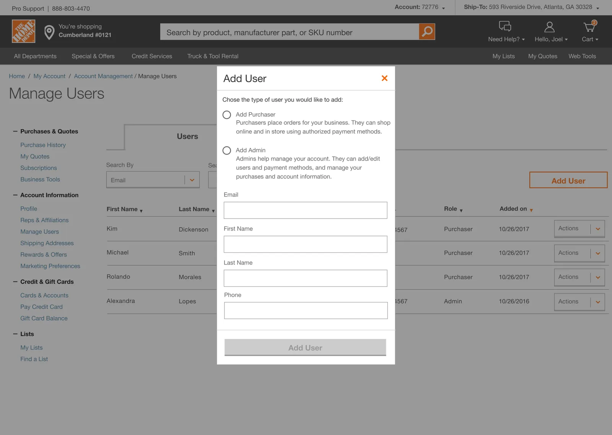
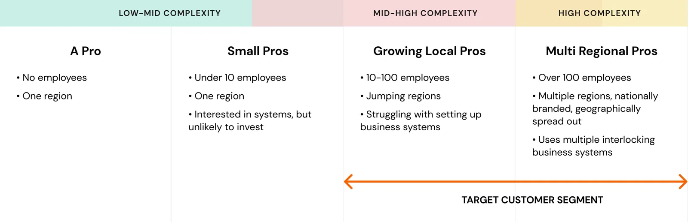
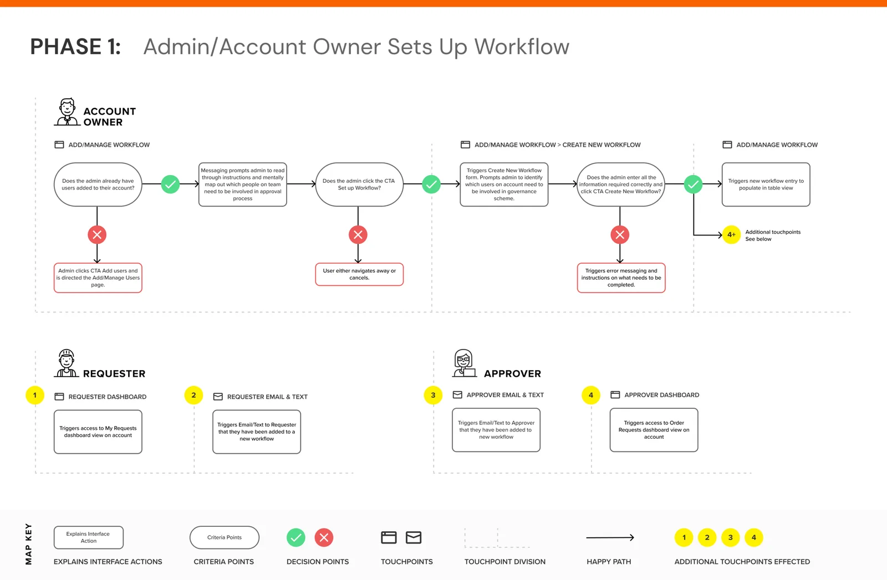
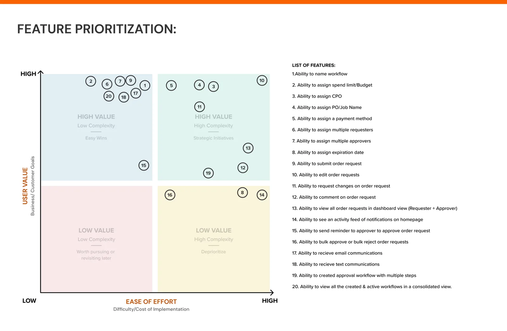

Purchase Approvals for Pros
Pro account owners couldn't control what their crews bought on the company account. I wrote the strategy, brought the B2B teams together around one governance framework, and designed the approval workflow that tied it together. It became the proof of concept for The Home Depot's larger Projects initiative.
Call center complaints looked scattered. Laid over the Pro Transect, they came from one segment: growing and multi-regional Pros.
Other teams were building spend limits, CPOs and job names on their own. I pitched workflow as the framework they all plug into.
When the backend set limits, we shipped less, but never less control or visibility for the Pro.
Two roles couldn't run a crew.
The Pro site launched in 2018. An account owner could add employees, but only as an Admin or a Purchaser. That works for a two-person shop. It breaks for a contractor with crews on several job sites, all buying on one account.
Call centers filled up with the same request: give owners control over who buys what.

Pros aren't equivalent.
New to the space, I started with the Pro Transect, an enterprise UX study that maps Pros from low to high buying complexity. When I laid our complaints over it, they clustered in one place: Growing Local to Multi Regional Pros, at mid-high to high complexity.

Owners wanted a say before the purchase, not a report after.
With a UX researcher, I ran 15 one-on-one interviews with mid-high complexity Pros, captured How Might We notes, and affinity-mapped them into opportunity areas. In parallel, I compared how four competitors handle account governance.
The takeaway wasn't one feature. It was that the architecture had to scale, so we could add approval controls over time.
I pitched workflow as the umbrella for every governance feature.
Other B2B teams were already building CPOs, PO and Job Names, and spend limits, each on its own. I ran a workshop with PMs, designers and developers, shared the research, and showed how those features could live inside one workflow. The room sketched it together, and separate features became one framework.
The governance framework I proposed in the workshop. Each team's feature became a criterion inside workflow.
I split the work into three phases, one per role.
An approval is a handoff between people, so I mapped it by role. With my PM and developers, I scoped the MVP into three phases, then drew a task flow for each, marking every decision point and handoff. The phases kept a squad of six aligned on what we were building next.

When the backend set limits, I cut scope, not the promise.
I checked level of effort with engineering as I designed. The backend turned out far less stable than we expected, so we started with the essentials and planned to scale up.
I mapped every feature on value against ease of build to decide what stayed. The rule I held: compromise, but never at the Pro's expense.

{{ tradeActive.label }}
{{ tradeActive.desc }}
From whiteboard to every handoff.
I sketched each touchpoint with the team, then took it to high fidelity on desktop and mobile in The Home Depot design system. Every screen was checked against four requirements. Pick a step to see the sketch, the final design, and the Pro problem it answers.
{{ expActive.label }}
{{ expActive.desc }}
I kept leadership, engineering and Pros in the same loop.
To earn buy-in and more resources, I kept a summary deck of the work for the wider team and leadership. I attached it to every meeting invite so partners came prepared, and updated it with each design change. That left the meeting for deciding what to build.
I reviewed level of effort with developers as I designed, and a spike settled the editing question. That's how we found the backend limits in time to rescope, instead of after build started.
I wrote and ran usability tests for each phase with Pro candidates, measured by task completion. Testers completed every task. The stumbling points were in the details.
Approvals went from days to minutes.
Scope is negotiable. Control for the Pro isn't.
The first release was narrower than the design: one spend limit instead of four criteria, comments instead of edits, and no bulk actions. It solved the core problem and left the rest for later phases.
I'd run the technical spike before blue-sky design, not during it. We found the backend limits while designing, which meant reworking comps mid-stream. Starting from the constraints would have let the first comps ship closer to how they were drawn.
The umbrella idea outlived the feature. Pitching workflow as the home for other teams' work is why it could grow into Projects.
Close the gaps the competitive review showed: approval limits by user, multi-step approvals, and workflows assigned to groups. Amazon Business and Grainger already offered them, and complex Pros run on them.
From two roles to approval workflows Pro account owners set up themselves: the research, the umbrella strategy, the trade-offs and the results.